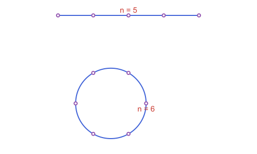
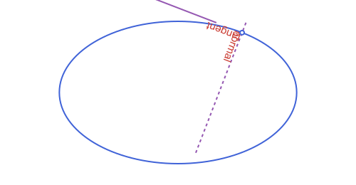
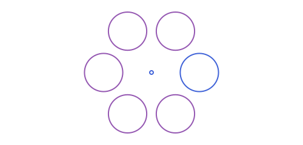

Cookbook: Building & Moving Shapes
Building shapes from what you have
A line, a ray or a segment from a point and a direction
using Apollonius
p = APPoint(1.0, 1.0)
APLine(p, APVector(2.0, 1.0)), APRay(p, pi / 2), APSegment(p, 5.0, pi / 3)(APLine([1.0, 1.0] -> [3.0, 2.0]), APRay([1.0, 1.0] -> [1.0, 2.0]), APSegment([1.0, 1.0] -> [3.5000000000000004, 5.330127018922193]))
Cut a segment in equal parts, or in a ratio
s = APSegment(APPoint(0.0, 0.0), APPoint(8.0, 0.0))
divide_segment(s, 4), divide_segment(s, 1, 2), point_at_distance(s, 6.5)(APPoint{2, Float64}[[2.0, 0.0], [4.0, 0.0], [6.0, 0.0]], [2.6666666666666665, 0.0], [6.5, 0.0])
Points spread evenly on a circle, an arc or a segment
equally_spaced_points(APCircle2(APPoint(0.0, 0.0), 2.0), 6)6-element Vector{APPoint{2, Float64}}:
[2.0, 0.0]
[1.0000000000000002, 1.7320508075688772]
[-0.9999999999999996, 1.7320508075688774]
[-2.0, 2.4492935982947064e-16]
[-1.0000000000000009, -1.732050807568877]
[1.0000000000000002, -1.7320508075688772]
An angle of a given measure, or between two lines
a60 = angle_with_measure(APPoint(0.0, 0.0), APPoint(4.0, 0.0), pi / 3)
rad2deg(measure(a60)), rad2deg(measure(APAngle2(APLine(APPoint(0.0, 0.0), APPoint(1.0, 0.0)), APLine(APPoint(0.0, 0.0), APPoint(1.0, 1.0)))))(59.99999999999999, 45.0)
The tangent and the normal at a point of a curve
e = APEllipse2(APPoint(0.0, 0.0), 5.0, 3.0)
pt = point_on(e, 1.0)
is_on_line(pt, tangent_line(e, pt)), is_perpendicular(tangent_line(e, pt), normal_line(e, pt))(true, true)
A regular polygon on a side, and a star
a, b = APPoint(0.0, 0.0), APPoint(3.0, 0.0)
area(regular_polygon_on_segment(a, b, 5)), length(vertices(star_polygon(APPoint(0.0, 0.0), APPoint(3.0, 0.0), 5, 2)))(15.484296605300703, 5)
A rhombus, a rectangle, a trapezoid or a kite
a, b = APPoint(0.0, 0.0), APPoint(4.0, 0.0)
area(rhombus_on_segment(a, b, pi / 3)), area(rectangle_from_diagonal(a, APPoint(4.0, 3.0), 0.5)), area(isosceles_trapezoid_on_segment(a, b, 2.0, 2.5)), area(kite_on_diagonal(a, APPoint(0.0, 4.0), 0.6, 1.5))(13.856406460551018, 10.518387310098706, 7.5, 6.0)
A circle inside or around a quadrilateral
trap = isosceles_trapezoid_on_segment(APPoint(0.0, 0.0), APPoint(6.0, 0.0), 2.0, 3.0)
kite = kite_on_diagonal(APPoint(0.0, 0.0), APPoint(0.0, 7.0), 0.35, 2.0)
circumcircle(trap).r, incircle(kite).r(3.0046260628866577, 1.721417183823353)
Round the corners of a polygon or a polyline
sq = APStraightNgon([APPoint(0.0, 0.0), APPoint(4.0, 0.0), APPoint(4.0, 4.0), APPoint(0.0, 4.0)])
rounded = round_corners(sq, 1.0)
length(sides(rounded)), area(rounded)(8, 15.141592653589793)
Move a polygon outward or inward, or grow a box
area(offset_polygon(sq, 1.0)), area(offset_polygon(sq, -1.0)), inflate(APBoundingBox(APPoint(0.0, 0.0), 4.0, 2.0), 1.0)(36.0, 4.0, APBoundingBox([-3.0, -2.0] .. [3.0, 2.0]))
An arc through three points, or with a given radius
arc_through_points(APPoint(0.0, 0.0), APPoint(2.0, 1.5), APPoint(4.0, 0.0)), arc_with_radius(APPoint(7.0, 0.0), APPoint(10.0, 0.0), 2.0)(APCircularArc2(APCircle2([2.0, -0.5833333333333334], 2.0833333333333335), [4.0, 0.0] -> [0.0, 0.0]), APCircularArc2(APCircle2([8.5, 1.3228756555322954], 2.0), [7.0, 0.0] -> [10.0, 0.0]))
A circle tangent to a line at a given point
l = APLine(APPoint(-3.0, 0.0), APPoint(9.0, 0.0))
tangent_circle_at_point(l, APPoint(2.0, 0.0), APPoint(0.0, 2.0)), length(tangent_circles_at_point(l, APPoint(2.0, 0.0), 1.2))(APCircle2([2.0, 2.0], 2.0), 2)
A triangle around a circle
c = APCircle2(APPoint(0.0, 0.0), 1.0)
t = circumscribed_triangle(c, point_on(c, 0.5), point_on(c, 2.5), point_on(c, 4.5))
isapprox(incircle(t), c; atol=1e-9)true
A conic from a focus and a directrix
F, d = APPoint(0.0, 0.0), APLine(APPoint(4.0, -1.0), APPoint(4.0, 1.0))
typeof(conic_with_focus(F, d, 0.5)), typeof(conic_with_focus(F, d, 1.0)), typeof(conic_with_focus(F, d, 2.0))(APEllipse2{Float64}, APParabola2{Float64}, APHyperbola2{Float64})
An ellipse from a center, a vertex and a point
el = ellipse_with_axis(APPoint(0.0, 0.0), APPoint(5.0, 0.0), APPoint(3.0, 2.4))
el.a, el.b(5.0, 2.9999999999999996)
A hyperbola from its asymptotes
hy = hyperbola_with_asymptotes(APLine(APPoint(0.0, 0.0), APPoint(1.0, 1.0)), APLine(APPoint(0.0, 0.0), APPoint(1.0, -1.0)), APPoint(2.0, 0.0))
hy.a, hy.b(2.0, 2.0000000000000004)
A parabola through three points
pa = parabola_through_points(APPoint(-2.0, 4.0), APPoint(0.0, 0.0), APPoint(1.0, 1.0), APVector(0.0, 1.0))
pa.focus[0.0, 0.25]
A similarity from two points and their images
m = similarity_map(APPoint(0.0, 0.0) => APPoint(1.0, 1.0), APPoint(1.0, 0.0) => APPoint(1.0, 2.0))
m(APPoint(0.0, 1.0)), scaling_map(2.0, 0.5)(APPoint(1.0, 1.0)), shear_map(1.0)(APPoint(0.0, 2.0))([0.0, 1.0], [2.0, 0.5], [2.0, 2.0])
Moving things
Rotate, scale or reflect a whole shape
t = APTriangle(APPoint(0.0, 0.0), APPoint(3.0, 0.0), APPoint(0.0, 4.0))
O = APPoint(0.0, 0.0)
isapprox(rotate(t, pi / 2), APTriangle(O, APPoint(0.0, 3.0), APPoint(-4.0, 0.0)); atol=1e-9), area(homothety(t, 2.0)) ≈ 4 * area(t), reflection(t, APLine(O, APPoint(0.0, 1.0))) ≈ APTriangle(O, APPoint(-3.0, 0.0), APPoint(0.0, 4.0))(true, true, true)
Every type accepts these. rotate and homothety turn and scale about the origin unless you give a center as the last argument, as in rotate(t, pi / 2, c). See Affine Maps.
Repeat a shape in a circular pattern
Broadcast rotate over a vector of angles to place several copies of the same shape evenly around a center, the same idea behind Building the package logo:
center = APPoint(0.0, 0.0)
petal = APCircle2(APPoint(3.0, 0.0), 1.2)
copies = rotate.(petal, (1:5) .* (2pi / 6), center) # 5 more, 6 in total
length(copies)5
Apply several steps as one
m = rotation_map(pi / 2, APPoint(0.0, 0.0)) ∘ translation_map(APVector(3.0, 0.0))
isapprox(m(APPoint(0.0, 0.0)), APPoint(0.0, 3.0); atol=1e-9)true
A map from three points and their images
m = affine_map(APPoint(0.0, 0.0) => APPoint(1.0, 1.0), APPoint(1.0, 0.0) => APPoint(3.0, 1.0), APPoint(0.0, 1.0) => APPoint(1.0, 4.0))
m(APPoint(1.0, 1.0))[3.0, 4.0]
Transform several objects with one macro
c = APCircle2(APPoint(1.0, 2.0), 3.0)
s = APSegment(APPoint(0.0, 0.0), APPoint(4.0, 0.0))
C2, S2 = @rotate (pi / 2) begin
c
s
end
C2.r, C2.center ≈ APPoint(-2.0, 1.0)(3.0, true)